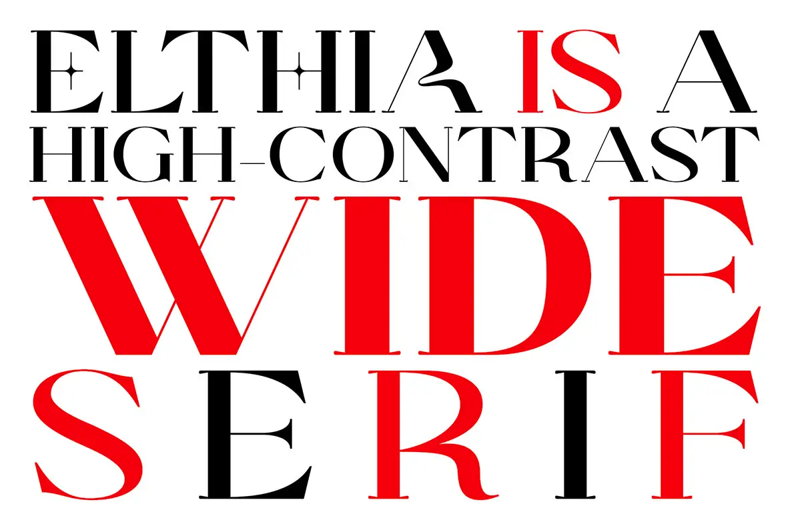

The browser version follows the original four-line rhythm, lets the uploaded face shape every line, and keeps the red and black word treatments independently adjustable.
A type-only poster with a red accent line and two oversized specimen words.

The browser version follows the original four-line rhythm, lets the uploaded face shape every line, and keeps the red and black word treatments independently adjustable.